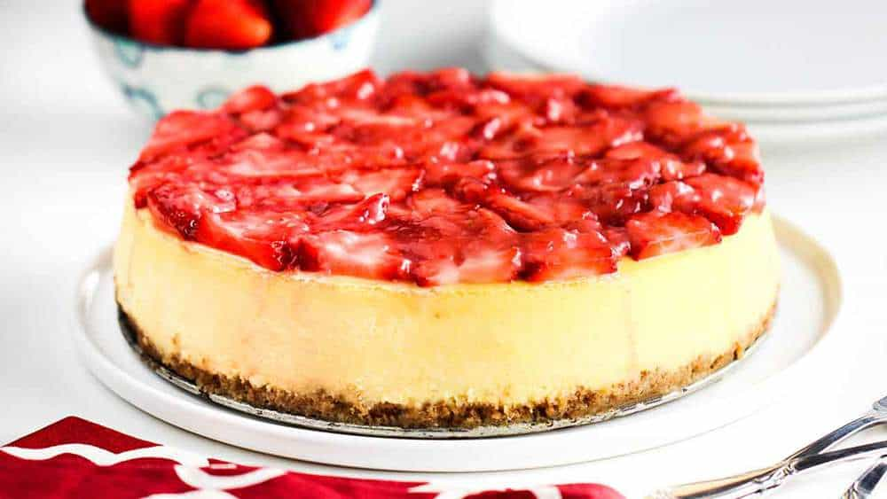

Pedro's DEATH ROW menu: Strawberry Cheesecake
an Odin Project assignment

Description:
Homemade cheesecake sounds intimidating, but it was actually simple, and one of
the first desserts I learned how to make when my husband and I got married because
it's so easy!
Decorating is a breeze – Simply add sliced strawberries to the top, spoon the
strawberry sauce right on, and you're done. It will look impressive, and best of all, it's
a make-ahead dessert that takes the pressure off of the host and gets you back to
the table to enjoy the company of your family and friends.
Ingredients
For the crust:
- 2 cups graham cracker crumbs, from 15-16 whole crackers
- 8 Tbsp unsalted butter, melted
- 2 Tbsp granulated sugar
For the Cheesecake:
- 2 lb cream cheese, room temperature (4 packages, 8-oz each)
- 1 cup granulated sugar
- 5 large eggs, room temperature
- 1/4 cup sour cream
- 1/2 Tbsp vanilla extract
For the Strawberry Topping:
- 1 lb strawberries, rinsed, hulled and thinly sliced, plus 1/2 lb more to garnish
- 1/3 cup granulated sugar, or more to taste
- 1 Tbsp lemon juice, from 1/2 Lemon
Yield: 12 Samosas
Steps
How to Make the Cheesecake
- Prep: Preheat the oven to 350˚F with a rack in the center of your oven. Line the bottom of a 9-inch
springform pan with parchment for an easier release.
- In a medium bowl, combine graham crackers with sugar then stir in melted butter. Mix until moistened.
Press crumbs into your prepared pan, going 3/4 of the way up the sides. Bake in the center of the oven at
350˚F for 8 minutes then cool to room temperature.
- Increase the oven to 450˚F. Place 2 sheets of extra-wide heavy-duty foil on the counter. Set the
springform pan in the center and fold the foil up the sides of the pan ensuring there are no rips. Fan the
foil out slightly at the tops to keep the rim clear for rising.
- In the bowl of a stand mixer fitted with a paddle attachment, beat cream cheese and 1 cup sugar on
medium/high speed for 5 minutes until completely smooth, scraping down the bowl as needed.
- Reduce speed to medium and add eggs one at a time, letting them incorporate between each addition
and scraping down the bowl as needed.
- Reduce speed to low and add sour cream and vanilla and mix just until incorporated. Pour batter over
the cooled crust.
How to Bake Cheesecake in a Water Bath
- Boil a pot of water (boil more than you think you'll need). Set your foil-wrapped cheesecake pan in a
deep roasting pan. Pour hot water around the edges about halfway up the sides of the springform pan.
- Carefully transfer the cheesecake to the center rack of the oven and bake at 450˚F for 15 minutes then
reduce heat to 225˚F and, without opening the door, bake an additional 65-75 minutes or until the center
of the cheesecake wobbles slightly when you jolt the pan.
- emove the cheesecake from the oven and let it rest in the roasting pan with water for 45 minutes then
transfer the pan to a wire rack to cool completely. Cover and chill in the refrigerator overnight to fully set
before slicing.
How to Make Strawberry Topping
- In a medium saucepan, combine chopped strawberries, lemon juice, and sugar. Set over medium heat and
bring to a boil. Reduce the heat and continue simmering, stirring occasionally for 20-23 minutes, or until
the sauce is thickened. Cool to room temperature then refrigerate until serving.
- When ready to serve the cheesecake, garnish the top with fresh halved or quartered strawberries. Serve
slices of cheesecake generously drizzled with the strawberry sauce topping.
Nutritional Information
- Calories: 489 cal
- Carbohydrates: 55 g
- Protein: 5 g
- Fat: 28 g
- Cholesterol: 114 mg
- Sodium: 284 mg
- Potassium: 184 mg
- Fiber: 1 g
- Sugar: 41 g
- Vitamin A: 945 IU
- Vitamin C: 24.6 mg
- Calcium: 80 mg
- Iron: 1.4 mg
Back to Homepage ->
More dishes on Pedro's DEATH ROW: menu:
Samosas | Bacalhau à brás